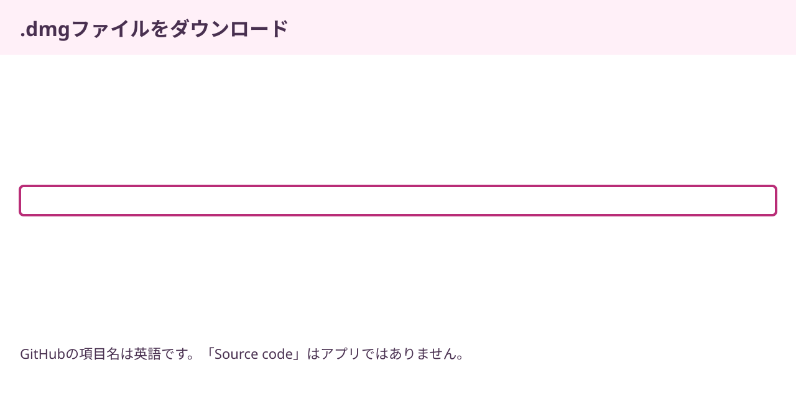
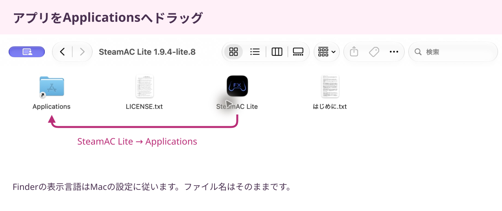
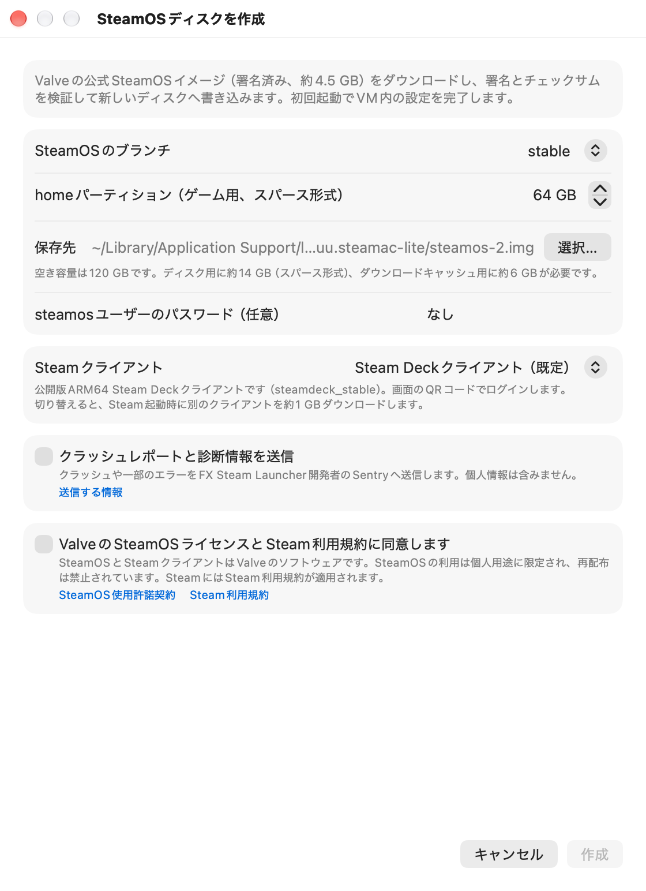
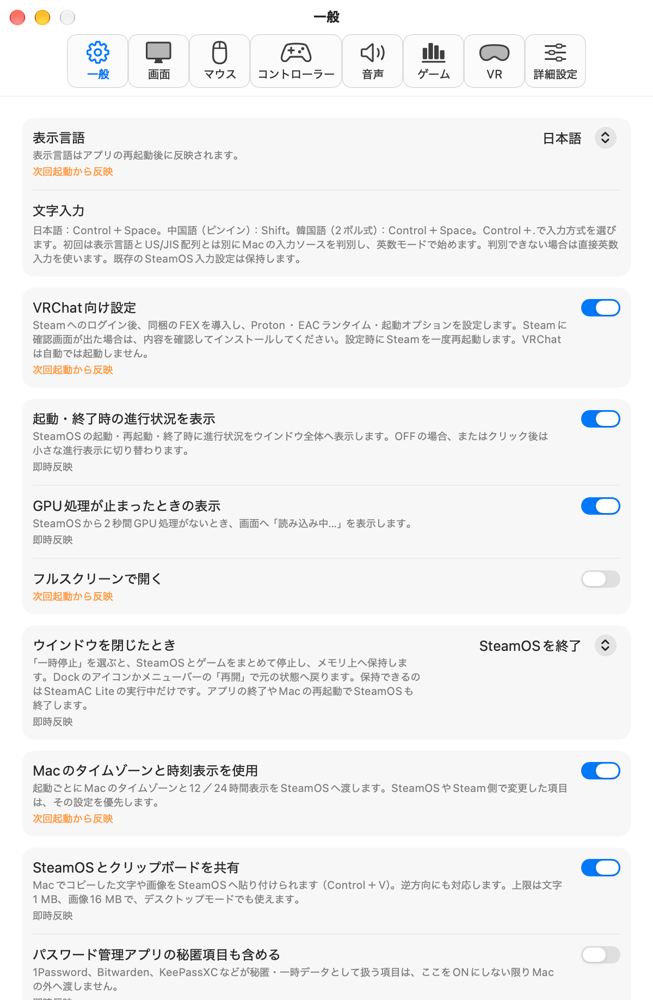
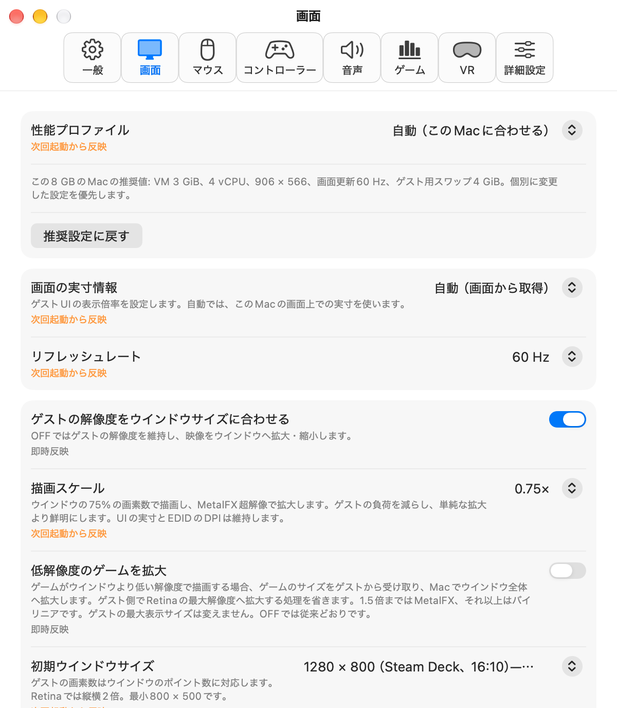

写真を拡大 ↗
写真を拡大 ↗はじめる前に
用意するもの
- Mac
- Apple Silicon（M1以降）
macOS 15.5以降・RAM 8 GB以上 - 空き容量
- 作成用に20 GB程度
＋ゲーム・スワップ用の余裕 - ネット接続とアカウント
- SteamOS・ゲームのダウンロード用
自分のSteamアカウント
Intel Macには対応していません。SteamAC LiteはMac上の仮想マシンでSteamOSを動かすアプリです。8 GB向けスワップの初回作成には、Mac側とSteamOS側の双方に8 GiB以上の空きが必要です。
アプリのダウンロード
DMGをダウンロードする
「Mac用アプリをダウンロード」ボタンを押します。Releaseページから入手する場合は、Assetsの中にある、末尾が.dmgのファイルを選んでください。
SteamAC-Lite-1.9.4-lite.8-macos-arm64.dmg
Mac用アプリをダウンロード

写真を拡大 ↗Macへインストール
Applicationsへコピーする
ダウンロードしたDMGを開きます。中にあるSteamAC Liteを、Applicationsフォルダへドラッグしてください。


写真を拡大 ↗初回にmacOSの確認が表示されたら
この実験版はAppleの公証を受けていません。入手元を確認し、Appleの「Macでアプリを安全に開く」に沿って、ご自身で許可してください。
表示言語の設定
表示言語で「日本語」を選ぶ
SteamAC Liteを初めて開くと、「表示言語を選択 / Choose a language」が出ます。「日本語」を選び、「続ける / Continue」を押してください。
設定画面とメニューが日本語になります。新しいSteamOSディスクでは、Steamも初回から日本語で表示されます。
Steamの言語はこれまでの設定を保持します。Steam内の「設定」から変更できます。
Steamを動かす環境を準備
SteamOSディスクを作る
「新しいディスクを作成…」を選びます。迷ったらブランチやSteamクライアントは既定のまま、ゲーム用の容量と保存先を確認して進めます。


写真を拡大 ↗この画面で確認すること
- ゲーム用容量
「homeパーティション」がゲームなどの保存領域です。画像は64 GBの例です。 - 利用条件
内容を読み、同意する場合にチェックして「作成」を押します。 - ダウンロードを待つ
SteamOSの準備とSteamの初回ダウンロードが自動で進みます。
既存ディスクも選べます。元の環境を残して試す場合は、SteamOSを終了してからディスクをコピーし、そのコピーを指定してください。
FEX・Proton・起動オプション
VRChat向け設定を進める
初回画面の「VRChat向け設定」は既定で有効です。あとから「設定… → 一般」でも確認できます。


写真を拡大 ↗- Steamへログイン
表示されたSteamの画面で、自分のアカウントへログインします。パスワードやSteam Guardの操作はご自身で行ってください。
- インストールの確認を進める
FEX-Emu・Proton Experimental・Proton EasyAntiCheat Runtimeを順に準備します。Steamに確認画面が出たら、内容を確認してインストールしてください。
- 完了表示を待つ
ダウンロード後、アプリが追加設定を適用し、Steamを一度再起動します。「VRChat向け設定が完了しました」と表示されたら、次の手順へ進みます。
対応するFEXの導入、VRChatへのProton指定、起動オプションはアプリが設定します。ログインとSteamの確認画面はご自身で操作してください。VRChatは自動では起動しません。
VRChatのインストール
SteamでVRChatをインストール
SteamでVRChatを探してインストールします。ダウンロードが終わったら、「プレイ」からご自身で起動してください。
写真を拡大 ↗VRChat向けの自動設定は、ほかのゲームの動作を保証するものではありません。ゲームの購入や利用条件の確認は、それぞれのサービスで行ってください。
日本語・中国語・韓国語の入力
US/JIS配列はMacの物理キーボードから自動判別します。日本語・中国語（ピンイン）・韓国語（2ボル式）は追加ダウンロードなしで使えます。
Control＋Space
Spaceで変換Enterで確定
初回はMacで選択中の入力ソースを判別します。表示言語とUS/JIS配列は入力方式の選択に使いません。MacがABCやUSなら直接英数、対応する日本語・ピンイン・2ボル式ならその入力方式を用意し、英数モードで始めます。判別できない場合は直接英数です。Control＋.で入力方式を選んでから、中国語はShift、日本語と韓国語はControl＋Spaceで英数と切り替えます。既存のSteamOS入力設定は保持します。JISの「かな」「英数」は日本語入力で使えます。外付けキーボードの交換後はアプリの再起動で配列を判別し直します。
メモリと解像度の設定
RAM容量や画面に合わせてメモリと解像度を選びます。8 GBのMacには軽量な初期設定を使い、容量の大きいMacでは解像度も上げます。
「設定… → 画面 → 性能プロファイル」で確認できます。自分で選んだ値がある場合は、そちらを優先します。
画面更新は既定で60 Hzです。ゲーム内の60 fpsを保証するものではありません。設定の変更は次回起動から反映されます。
Mac別の設定表を見る ↗
写真を拡大 ↗よくある質問
8 GBのMacでも使えますか？
8 GB向けの軽量設定を用意しています。M1・RAM 8 GBのMacで新規ディスクの作成とVRChat向け設定の完了を確認し、VRChatが動作したというユーザー報告もあります。重いワールド・アバターや長時間の安定性、すべてのMacでの動作は未確認です。
Steamが英語のままです
既存ディスクではSteamの言語を保持します。Steam内の「設定」で「日本語」を選び、Steamの案内に従って反映してください。新しいディスクをLite.5以降で作成する場合は、初回に選んだ言語を使います。
Protonや起動オプションを自分で設定しますか？
「VRChat向け設定」が有効なら、追加設定はアプリが行います。Steamへのログインとインストール確認はご自身で操作してください。既存の独自設定は確認せずに置き換えません。詳しい設定と復元方法も用意しています。
元のSteamOS環境は残せますか？
新しいディスクを作れば、元のディスクとは別の環境になります。元のディスクを選ぶと、そのディスクへ設定が反映されます。コピーで試す場合は、SteamOSを終了してからコピーし、同じディスクを複数のVMから同時に開かないでください。
このページの確認環境は？
2026年11月2日、Apple M1・RAM 8 GiB・macOS 27.2で確認しました。新規インストール検証では、ツールのダウンロードと追加設定の完了までを確認し、VRChat自体は起動していません。検証記録と制限を公開しています。
SteamAC Liteをダウンロード
ビルドやコマンド入力は不要です。